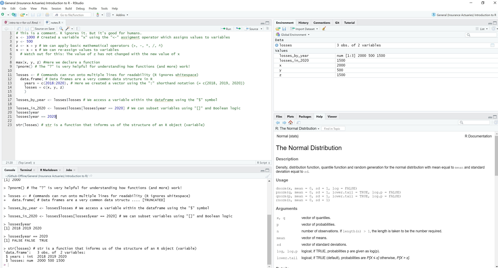

CS1 (Part B) exam 👍R is great for actuarial work 👀 … maybe next time.Yes … it’s HTML, not R😏
This presentation is to help IFoA actuaries tackle Part B of the CS1 exam.
R
R prefers vectorised operations (over concepts like for loops)
## [1] 3 4 5 6 7 8 9 10 11 12We assign values to variables using the <- (“assignment”) operator
x <- 1:10
y <- x + 2
x <- x + x # Notice that we can re-assign values to variables
z <- x + 2
y
## [1] 3 4 5 6 7 8 9 10 11 12
z
## [1] 4 6 8 10 12 14 16 18 20 22Even though z is assigned the same way as we assigned y, y does not equal z, execution order matters in R!
We now add functions to the R code:
## [1] 4 7 5 3 3Let’s create a matrix in R
Note: Matrix multiplication requires the %*% syntax
## [,1] [,2] [,3]
## [1,] 30 36 42
## [2,] 66 81 96
## [3,] 102 126 150The “powerhouse” of R
R has built in logic expressions:
| Operator | Description |
|---|---|
| < (<=) | less than (or equal to) |
| > (>=) | greater than (or equal to) |
| == | exactly equal to |
| ! | NOT |
| & | AND (element-wise) |
| | | OR (element-wise) |
| != | not equal to |
We can use logical expressions to effectively filter data
Here we subset the data using the [...] syntax
## [1] 1 2 3 4 6We can extend R’s functionality by loading packages:
R trying this?install.package("ggplot2")We’ll focus on exam likely candidates with .csv and .RData file imports
R was designed to be used for statistical computing - so it handles randomness well!
R has a number of in-built probability distributions:
R is great for calculating “suitable summary statistics”
## Min. 1st Qu. Median Mean 3rd Qu. Max.
## 18.0 28.0 48.0 49.9 69.5 89.0## [1] 24.19114Let’s calculate the “Pearson’s, Spearman’s and Kendall’s measures of correlation for bivariate data”
Let’s calculate confidence intervals for “the mean and the variance of a normal distribution” and “a binomial probability and a Poisson mean”
Let’s use the bootstrap method to “estimate properties of an estimator” and “obtain confidence intervals”.
Let’s “fit a simple linear regression model to a data set”
Let’s expand this and “fit a multiple linear regression model to a data set”
We also need to be able to “fit a generalised linear model to a data set”:
We need to be able to “… undertake exploratory data visualizations”
Estimate \(\mathbb{E}[X]\)
Calculate a 95% confidence interval (“CI”) for \(\mathbb{E}[X]\)
Calculate a 95% CI for \(\mathbb{E}[X]\) using a bootstrap method with a sample size of 10,000
# We have X equal to:
x <-
c(0.20, 0.40, 1.20, 0.55, 0.75,
1.10, 0.50, 0.70, 0.55, 0.60,
0.65, 0.55, 0.50, 0.50, 0.45,
0.65, 0.55, 0.30, 0.50, 0.45
)
# 1. Expected value of X is:
mean(x)## [1] 0.5825Given \(X \sim \mathcal{N}(\mu,\,\sigma^{2})\) with unknown population variance, a 95% CI for \(\mathbb{E}[X]\) is:
confidence_level <- 0.95
confidence_interval <-
c(
(1 - confidence_level)/2,
1 - (1 - confidence_level)/2
)
degrees_freedom <- length(x) - 1
critical_value <- qt(confidence_interval, degrees_freedom)
mu <- mean(x)
sigma <- sqrt(var(x))
c(
mu - abs(critical_value[1]) * sigma / sqrt(length(x)),
mu + abs(critical_value[1]) * sigma / sqrt(length(x))
)## [1] 0.4737234 0.6912766We can also calculate a 95% CI for \(\mathbb{E}[X]\) using a bootstrap method:
set.seed(42)
sample_size <- 10000
confidence_level <- 0.95
confidence_interval <-
c(
(1 - confidence_level)/2,
1 - (1 - confidence_level)/2
)
x_bootstrapped <-
replicate(sample_size,
mean(sample(x, replace = TRUE))
)
quantile(x_bootstrapped, probs = confidence_interval)## 2.5% 97.5%
## 0.49 0.69Another example
Fit a GLM analysis to the given data using a Poisson distribution
library(learnr) packagelibrary(tidyverse) suite of packages: enhancing your experience with RR code within a R Markdown (.Rmd) file: good for report writingR with Git: use the Terminal to interact with a remote repo from the command lineR using Shiny*With heavy assistance from reveal.js and in hindsight I should have used the right tool for the right job … maybe next time 😏
Click here to download